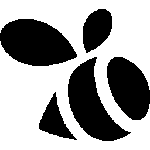
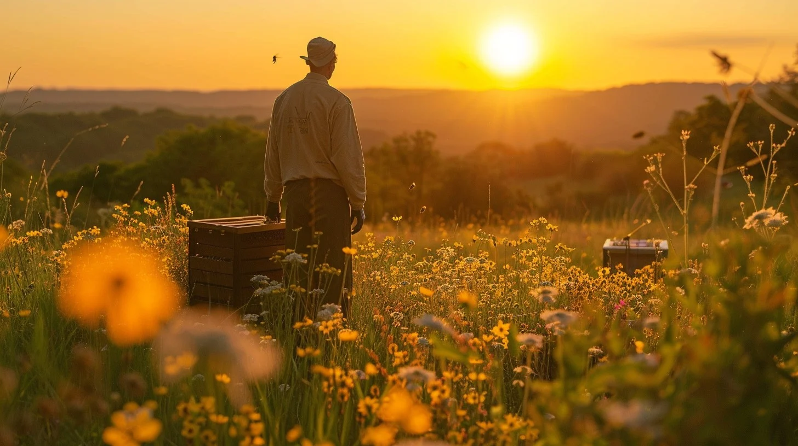

MEET THE BEE FAMILY
TWOH.
Home
Bees and Relatives
History
Where to start beekeeping
Read More
×

Title Goes Here
Description text goes here.
HONEY BEE
BUMBLEBEE
CARPENTER BEE
MASON BEE
SWEAT BEE
LEAFCUTTER BEE
CUCKOO BEE
LONG-HORNED BEE
MINING BEE
WASPS?
PAPER WASP
CUCKOO WASP
MUD DAUBAR WASP
PAGES: